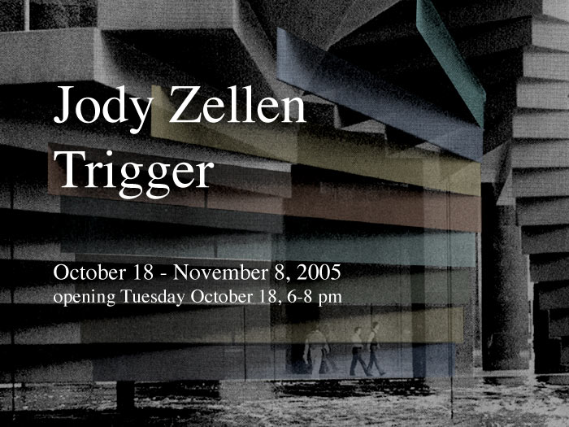

|
| |

"(Trigger) is in a transitional space, a stairwell, where students and visitors walk energetically to the next class or office. People twist and turn as they ascend and descend, encountering new image experiences along the way. The process of navigating in real space, rather than within the space of a computer screen, also adds a playful element. The visitors become performance artists or dancers unintentionally interacting within this encompassing artwork. The outside world is further transformed by large-scale transparencies covering the windows. Instead of ecclesiastical imagery, these “stained glass windows” represent the iconography of the city. The pacing of motion within the space, ambient sound and continuously changing projections become an exploration in visual anthropology – a form of “Kinesics in Context” to use the title of an important text in that field. In the work Jody Zellen has been able to incorporate the spirit of transient experience exemplified by the web into a human space which will force visitors to pause and reflect before returning to their immediate mission. Perhaps during that pause they will give some thought to the larger question about where we are all heading as mediating experiences begin to dominate daily life."
Edward
W. Earle, Curator of Digital Media, International Center of Photography,
New York
Saccadic Streets: Jody Zellen’s Urban Exploration from
the brochure essay
download the complete brochure as a pdf

Trigger
- an interactive site-specific installation - was produced in residence
at Pace Digital Gallery in 2005, with the collaboration of members* of
The Center for Advanced Media at Pace University in New York City.
*Dr. Francis T Marchese and Josh Rose, CSIS student.
Jody Zellen is an artist living in Los Angeles, California who works in many media simultaneously making photographs, installations, net art, public art, as well as artists’ books that explore the subject of the urban environment. She employs media-generated representations of contemporary and historic cities as raw material for aesthetic and social investigations. Solo exhibitions include Laguna Art Museum (2004-05); Susanne Vielmetter Los Angeles Projects (2002); Deep River, Los Angeles (2001). Her net art projects have shown world wide since 1997 in festivals and exhibitions such as Arte Nuevo Interactive, Mexico, ACCEA International media festival, Armenia, Prog:me, Rio de Janeiro (2005); File, Brazil, Festival du Noveau Cinema, Montreal, Siggraph, Los Angeles, 404 International Festival of Electronic Art, Argentina, Cosign, Croatia (2004); New Forms Festival, Vancouver, Recontres Internationales, Berlin (2003); Whitney Museum Artport (2002); XXV Bienal de Sao Paulo (2002); Art Future 2000, Taiwan; Net_Condition, ZKM (1999); Film + Arch.3, Graz (1997).
A complete bio and
other projects can be accessed at www.jodyzellen.com.